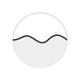

I Wake Up Every Morning
in Order to Dream
夢を見るために、毎朝私は目覚めるのです
For youあなたのために
毎晩、誰にも見えない数時間があります。Dreamはそれを残します。話した夢と過ごした一日が重なるうちに、心にかかっているもの、望んでいるもの、まだ言葉になっていないものが、少しずつ形をあらわします。
For everyoneみんなのために
名前を伏せて共有した夢は、Dreamを使うすべての人の記録に加わります。それはやがて、人の夢についての大きな共有の記録になります。夢とは何か。古くからの問いに、もう一度、一緒に向き合うために。
How to use使い方
起きたらDream
「Dream」をタップして、見た夢をそのまま話す。話し終えて黙ると、記録されます。
日中はNow
アプリを開いて、今の気持ちをつぶやく。開けば聞いています。文字でも書けます。
自動で残るDay
予定・場所・写真・睡眠は自動で集まります。タイムラインで見られます。
翌朝Read
その夜の夢を開くと、Storyで整えた夢・映像・日々とのつながり、Freudで解釈と対話。
ときどきLook back
夢一覧とレポートで、くり返し現れるものが見えてきます。
Film夢の映像
海の音のする駅
11月11日の朝
白い廊下
11月8日の朝
空を泳ぐ魚
11月3日の朝
残すほど、夢の読み解きは深くなる
夢は、日々のできごとから編まれています。Nowでつぶやくほど、そして会う人・行く場所・予定・写真・睡眠をDreamに見せるほど、つながりが多く見つかり、フロイトの読み解きも確かになります。許可した情報は、夢を読むためだけに使い、iPhoneの外には送りません。
何を共有するかは、いつでもあなたが決めます。Dreamは医療サービスではありません。
Subscription料金
最初の1か月は無料その後 月額480円（予定）
すべての機能が使えます。App Storeでいつでも解約できます。
Download on the App Store